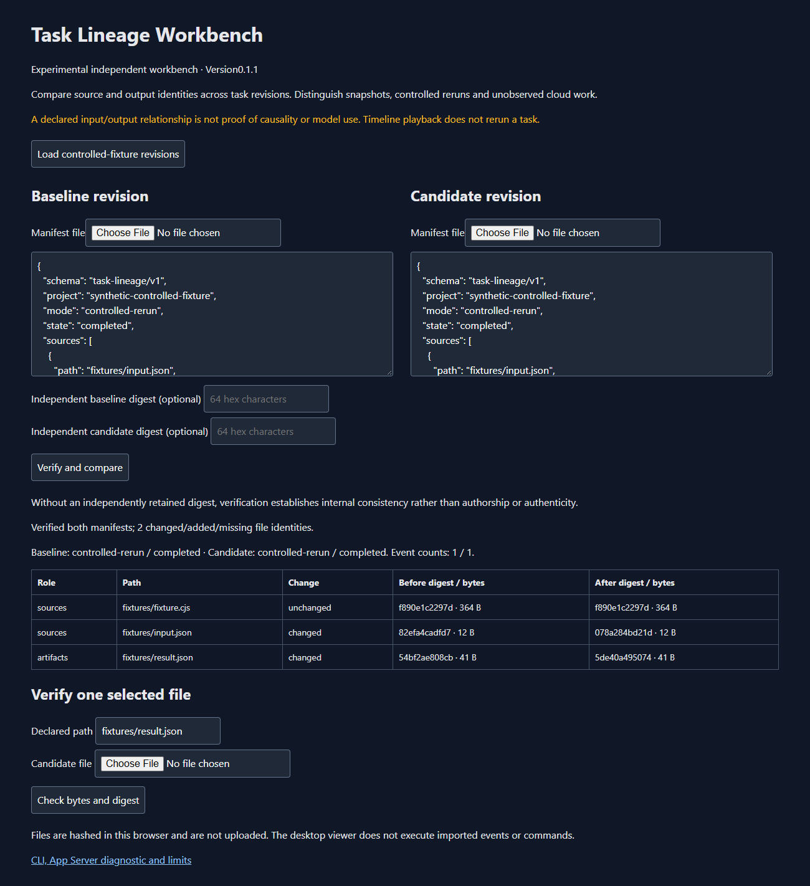

Keep source and output identities attached to a declared task revision. Compare what changed without claiming to know which inputs an AI model used.
Open the live application · Desktop and source downloads · Source and CLI guide

Load the controlled-fixture revisions. One input factor changes, the fixture program stays unchanged, and its output bytes change. The table keeps source and artifact changes separate. These examples were produced by actual local Node fixture runs, not a model turn.
Run the supplied snapshot CLI from your intended workspace with explicit relative source/artifact file lists. Load two revision manifests into the viewer. Optionally provide independently retained digests; then choose a file and its declared path to verify candidate bytes.
Hash and byte length both participate in comparison, and both are visible in the table. A contradictory length claim is a change even when the declared hash is the same. Manifest files over5MB are refused before allocation. Each source/artifact list is limited to100 files/32MB, including actual cumulative verification reads when files have changed.
20 core/actual CLI tests and14 Chromium checks pass, including exact budget boundaries, oversized CLI inputs, byte-length contradictions, malformed hash types and both list limits. A separate extracted-Windows smoke checks renderer loading and isolation.
Core/CLI evidence · Browser evidence · Extracted renderer smoke evidence
The separate CLI diagnostic starts the public Codex CLI0.166.0 App Server in an isolated checkout-contained home, completes initialize and thread-list calls, and stops the owned process. Its auth is process-local. It performs no model turn, login, approval or cloud task. The desktop viewer does not run imported events.
Diagnostic summary · Public interface source
Snapshots are not atomic filesystem transactions. A declared input/output relationship is not proof of causality, model use or environmental equivalence. A fully rewritten manifest can pass its own checksum; an independent anchor is needed to detect that rewrite.
Declared modes distinguish snapshots, controlled reruns, App Server observations and unobserved cloud work. Completion/interruption states are reported values, not inferred from an absent event. Live task streaming, automatic rerun and cloud lineage are outside this release.
node --test tests/manifest.test.cjs node scripts/build.cjs node src/cli.cjs probe
Original MIT code; independently acquired Codex CLI is Apache-2.0. Windows package includes Electron and Chromium notices. Core, browser, backend diagnostic and packaged smoke checks have distinct scopes.